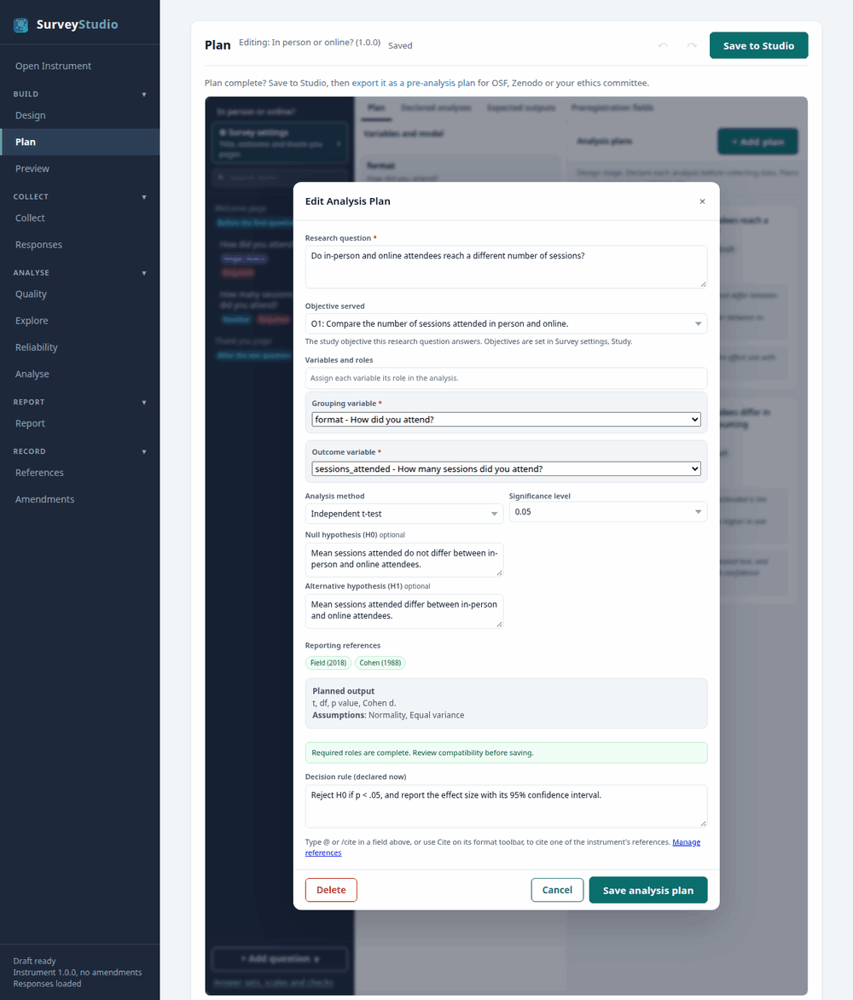
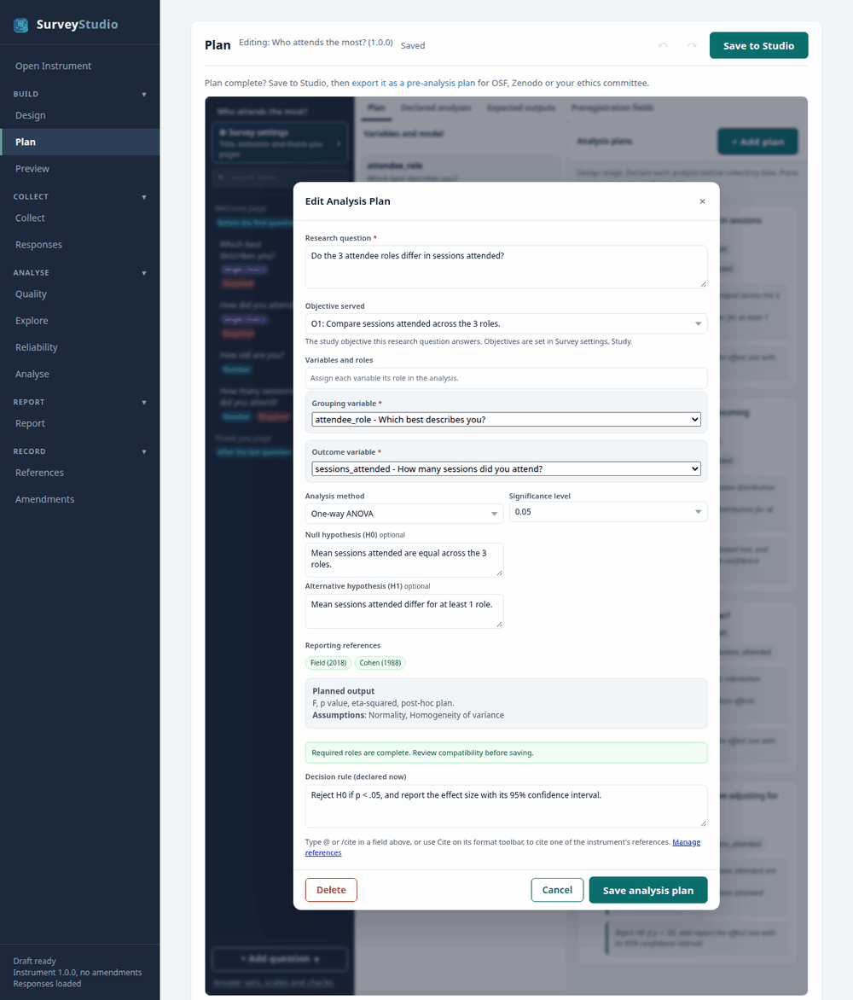
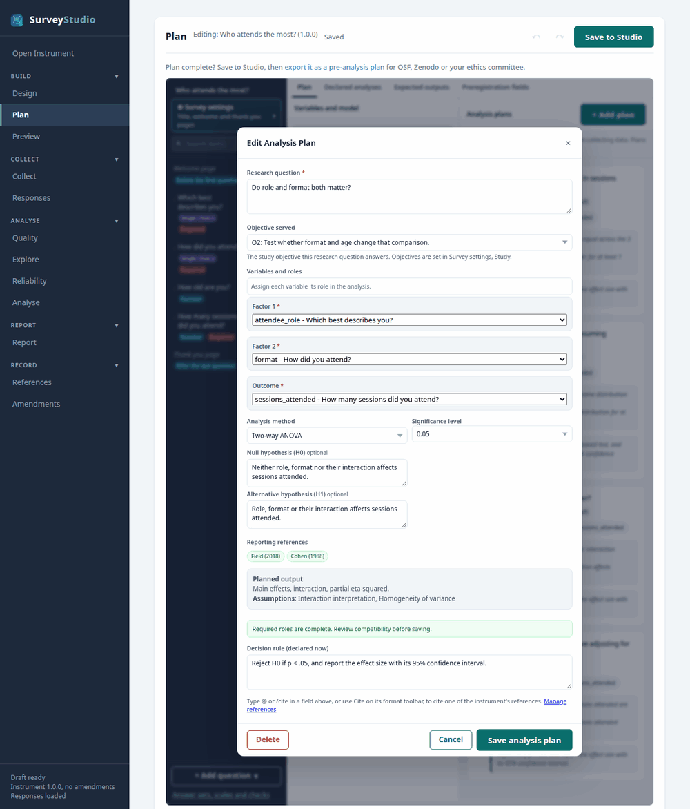
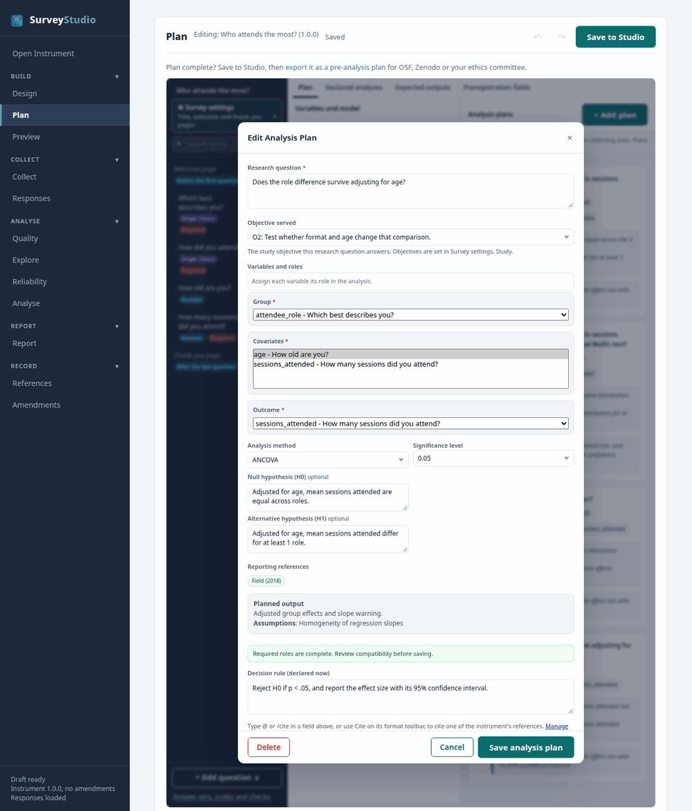

These methods test whether an outcome differs between 2 or more groups of respondents.
Assumptions. Independent respondents. The t-test and ANOVA assume a roughly normal outcome in each group and similar spread, the rank-based tests do not. ANCOVA adds a straight-line relation with the covariate.
In SurveyStudio, open Plan on the Design screen, add a research question and choose the method. Set the outcome, a numeric answer, and the grouping variable, a single-choice answer. Two-way ANOVA takes a second grouping variable, and ANCOVA a numeric covariate. Declare the hypotheses and the decision rule before collecting responses.
Independent samples t-test

two_group demo.In the pre-analysis plan:
RQ1. Do in-person and online attendees reach a different number of sessions? Null hypothesis (H0): Mean sessions attended do not differ between in-person and online attendees. Alternative hypothesis (H1): Mean sessions attended differ between in-person and online attendees. Planned decision rule: Reject H0 if p < .05, and report the effect size with its 95% confidence interval.
In the report: the APA 7 sentence and a table, with a chart where the method has one, each titled with the research question.
References: Field, A. (2018). Discovering statistics using IBM SPSS statistics (5th ed.). SAGE. Cohen, J. (1988). Statistical power analysis for the behavioral sciences (2nd ed.). Lawrence Erlbaum.
Mann-Whitney U test
two_group demo.In the pre-analysis plan:
RQ2. Do in-person and online attendees differ in sessions attended, without assuming normality? Null hypothesis (H0): The distribution of sessions attended is the same for both formats. Alternative hypothesis (H1): Sessions attended tend to be higher in one format. Planned decision rule: Reject H0 if p < .05 on this rank-based test, and report the effect size with its 95% confidence interval.
In the report: the APA 7 sentence and a table, with a chart where the method has one, each titled with the research question.
References: Cohen, J. (1988). Statistical power analysis for the behavioral sciences (2nd ed.). Lawrence Erlbaum. Mann, H. B., & Whitney, D. R. (1947). On a test of whether one of two random variables is stochastically larger than the other. Annals of Mathematical Statistics, 18(1), 50-60.
One-way ANOVA

multi_group demo.In the pre-analysis plan:
RQ1. Do the 3 attendee roles differ in sessions attended? Null hypothesis (H0): Mean sessions attended are equal across the 3 roles. Alternative hypothesis (H1): Mean sessions attended differ for at least 1 role. Planned decision rule: Reject H0 if p < .05, and report the effect size with its 95% confidence interval.
In the report: the APA 7 sentence and a table, with a chart where the method has one, each titled with the research question.
References: Field, A. (2018). Discovering statistics using IBM SPSS statistics (5th ed.). SAGE. Cohen, J. (1988). Statistical power analysis for the behavioral sciences (2nd ed.). Lawrence Erlbaum. Fisher, R. A. (1925). Statistical methods for research workers. Oliver & Boyd. Shapiro, S. S., & Wilk, M. B. (1965). An analysis of variance test for normality. Biometrika, 52(3-4), 591-611.
Kruskal-Wallis test
multi_group demo.In the pre-analysis plan:
RQ2. Do the 3 attendee roles differ in sessions attended according to a Kruskal-Wallis test? Null hypothesis (H0): Sessions attended have the same distribution across roles. Alternative hypothesis (H1): Sessions attended differ in distribution for at least 1 role. Planned decision rule: Reject H0 if p < .05 on this rank-based test, and report the effect size with its 95% confidence interval.
In the report: the APA 7 sentence and a table, with a chart where the method has one, each titled with the research question.
References: Cohen, J. (1988). Statistical power analysis for the behavioral sciences (2nd ed.). Lawrence Erlbaum. Kruskal, W. H., & Wallis, W. A. (1952). Use of ranks in one-criterion variance analysis. Journal of the American Statistical Association, 47(260), 583-621.
Two-way ANOVA

multi_group demo.In the pre-analysis plan:
RQ3. Do role and format both matter? Null hypothesis (H0): Neither role, format nor their interaction affects sessions attended. Alternative hypothesis (H1): Role, format or their interaction affects sessions attended. Planned decision rule: Reject H0 if p < .05, and report the effect size with its 95% confidence interval.
In the report: the APA 7 sentence and a table, with a chart where the method has one, each titled with the research question.
References: Cohen, J. (1988). Statistical power analysis for the behavioral sciences (2nd ed.). Lawrence Erlbaum. Fisher, R. A. (1925). Statistical methods for research workers. Oliver & Boyd. Shapiro, S. S., & Wilk, M. B. (1965). An analysis of variance test for normality. Biometrika, 52(3-4), 591-611.
Analysis of covariance (ANCOVA)

multi_group demo.In the pre-analysis plan:
RQ4. Does the role difference survive adjusting for age? Null hypothesis (H0): Adjusted for age, mean sessions attended are equal across roles. Alternative hypothesis (H1): Adjusted for age, mean sessions attended differ for at least 1 role. Planned decision rule: Reject H0 if p < .05, and report the effect size with its 95% confidence interval.
In the report: the APA 7 sentence and a table, with a chart where the method has one, each titled with the research question.
References: Cohen, J. (1988). Statistical power analysis for the behavioral sciences (2nd ed.). Lawrence Erlbaum. Fisher, R. A. (1925). Statistical methods for research workers. Oliver & Boyd. Shapiro, S. S., & Wilk, M. B. (1965). An analysis of variance test for normality. Biometrika, 52(3-4), 591-611.